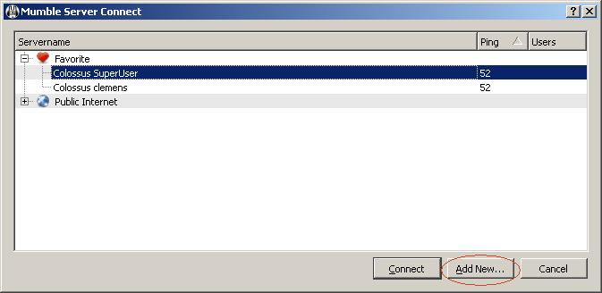
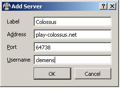

Audio chatting (Mumble) for Colossus server
Audio chatting (Mumble) for Colossus server
On this page I collect information regarding to an ongoing (started) try-out-something
work to provide an audio chat for Colossus. Something like a conference call.
Or, in plain words: that players of a game can talk to each other instead
of having to type on the keyboard.
How does it work
I have set up a Mumble (Murmur) server on play-colossus.net, same
server where the Colossus Public Game Server is running. (Mumble is the name
of the client software, Murmur is the server side, well... server :o) .
Mumble is meant exactly for that: voice chat in multiplayer games; perhaps more
for 3D-Shooters with Avatars and bla bla bla, but anyway
- Colossus qualifies as a game, doesn't it?
I discovered it quite a while ago and it looked pretty cool, just had never the time
to try anything with it. (I suspect we won't have much for the "positional" feature... ;-)
For the start, there is no linking between the PGS and Mumble, users will have
to sign up by themselves, and agree in the text chat which Murmur server channel
to use for a certain game, and so on.
Current situation
This is just at the beginning. I've set up the server and created five generic channels
called Game-1 ... Game-5. The rest, people have to arrange manually.
Getting started
Anybody who is interested to try it out, you first need to install the Mumble client
to your computer. There are ready installations for Windows, Mac OS X and various Linux
distributions. I installed the Windows version to my computer and it worked like a charme.
There are (in my opinion) excellent
instructions how to install Mumble Client
provided by Mumble team on their Sourceforge home/project page.
After/during installation, you'll have to go through a setup wizard which determines
optimal settings with your audio card, speakers/headset, microphone etc.
If that sounds like something you'd like to try, I recommend that you do the mumble client
setup (including audio settings wizard) ready before you next time play Colossus.
Once game is formed, and the players would like to try, some have done setup and some not,
that the others have then several minutes to wait until others have got Mumble to work,
would be annoying. (But then, the other players have plenty of time to fiddle with Mumble
while the one does his move... so, let's just wait and see.)
Setting up Mumble client
The Colossus server is currently not listed in any public "Mumble server directory" etc.
Thus you need to click the "Add New ..." button

in the Mumble Server Connect dialog.
For me it came up automatically on first start. If it doesn't, there is a icon which looks
like a blue ball (globe?) right below the word "Server" in the menu bar.
In the Add New ..." dialog, fill in the following information:

... naturally choose something
else than clemens for your user name :o)
A password is at the moment not required (I think). So, please behave properly... thanks.
How to use it
For now, I've created five "generic" channels called Game-1, Game-2, ... Game-5.
When players now start a game, they should discuss whether all of them are
interested/willing to try out the audio chat.
If all want, agree about which of the Game-X to use, start your mumble, join the chat.
Cross your fingers and hope it works! :)
Future plans
If that all start to fly, people interested to use it, and the server connection/bandwidth
can handle it, eventually I would hope to get the following:
- Username/password synchronization
- Game created/started will automatically create a similar named Mumble channel
Page created 2011-06-07 22:11
Page last updated 2011-06-07 22:12